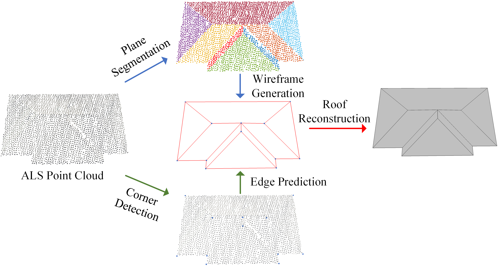

Abstract
Building roof reconstruction from airborne LiDAR point clouds is a fundamental task in urban modeling and 3D city reconstruction. However, existing methods often struggle with complex roof structures and noisy point clouds. We propose a planar-guided wireframe generation approach that combines planar segmentation with wireframe extraction to achieve accurate and robust roof reconstruction.
Our method first segments the point cloud into planar regions, then extracts wireframe structures guided by these planar constraints. This planar-guided approach ensures geometric consistency and improves the quality of the reconstructed roof models. Experimental results demonstrate that our method can effectively handle various roof types and produce high-quality 3D building models.
3D Visualization (Interactive)
Original Point Cloud
Click and drag to rotate • Scroll to zoom • Right-click to pan
Method Pipeline
Point Cloud Input
Airborne LiDAR scanning point clouds of building roofs
Planar Segmentation
Segment point cloud into planar regions using RANSAC
Wireframe Extraction
Extract wireframe structures guided by planar constraints
Roof Reconstruction
Generate final 3D building roof model
Comparison: Processing Steps
Step 1: Original Point Cloud
Step 2: Segmented Point Cloud
Step 3: Planar Mesh
Step 4: Wireframe Result
Key Features
Planar-Guided
Leverages planar segmentation to guide wireframe extraction, ensuring geometric consistency
Robust Reconstruction
Handles complex roof structures and noisy point clouds effectively
Efficient Processing
Fast and accurate processing of large-scale airborne LiDAR data
High Quality
Produces high-quality 3D building models suitable for urban applications